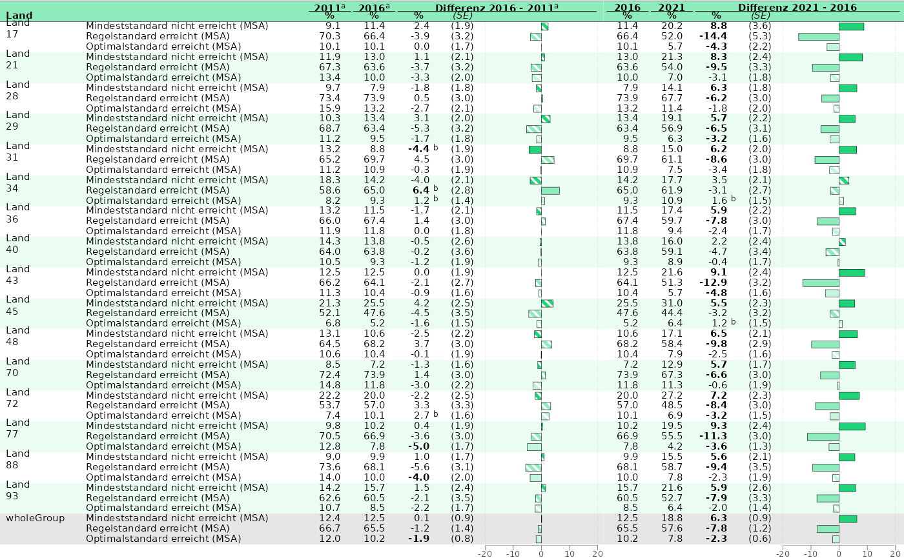

BT 22 example plots
bt22_plots.RmdLineplots
Chapter 4: Kompetenzwerte Bundesländer
## Prepare the data with 'KBuecher_imp3' as grouping_var
plot_dat <- prep_plot(
dat = trend_books,
competence = "GL",
grouping_var = "KBuecher_imp3"
)
## Remove wholeGroup, as we don't want to plot it
plot_dat <- filter_rows(plot_dat,
column_name = "state_var",
subsetter = "wholeGroup",
remove = TRUE)
p_line <- plot_lineplot(
plot_dat = plot_dat,
years_lines = list(c(2011, 2016), c(2016, 2021)),
years_braces = list(c(2011, 2016), c(2016, 2021)),
plot_settings = plotsettings_lineplot(default_list = lineplot_chpt_4)
)
p_line
save_plot(p_line, filename = "../split_lineplot_2_books.pdf")
#> agg_png
#> 2Chapter 4: Kompetenzwerte Deutschland
## First we extract the wanted competence areas from the data:
plot_dat_kb <- trend_books[trend_books$kb %in% c("DHW", "GL", "GM", "hoeren", "lesen"), ]
## Than we can prepare it with the according function:
plot_dat_test <- prep_plot(
dat = plot_dat_kb,
grouping_var = "KBuecher_imp3",
states = "wholeGroup"
)
## Here we change the seperate_plot_var - Argument to "competence_var", so the different competences are depicted in the tiles:
p_line <- plot_lineplot(
plot_dat = plot_dat_test,
seperate_plot_var = "competence_var",
label_sig_high = NULL,
years_lines = list(c(2011, 2016), c(2016, 2021)),
years_braces = list(c(2011, 2016), c(2016, 2021)),
background_lines = FALSE,
plot_settings = plotsettings_lineplot(
default_list = lineplot_chpt_4_germany
)
)
p_line
## We dont't want a whole A4 page for this plot, but maybe the half:
save_plot(p_line,
filename = "../adjusted_means_ger.pdf",
height = 226.2 / 2 + 10)
#> agg_png
#> 2Tables/Barplots
Chapter 3: Mindeststandards
dat_bar <- prep_plot(min_stand,
competence = "lesen",
parameter = "1"
)[["plot_tablebar"]]
## We want to plot percantages, so multiply by 100:
dat_bar$est_noTrendEnd_noComp <- dat_bar$est_noTrendEnd_noComp * 100
## Subset the rows that should be plotted in the table:
dat_bar <- subset(dat_bar, year_end == 2021)
dat_bar <- subset(dat_bar, year_start == 2016)
## Calculate the significances for the Mindeststandards (above, not significant, below)
dat_bar <- calc_MinStand(dat_bar,
sig_column = "sig_noTrendEnd_CompWhole",
est_column = "est_noTrendEnd_CompWhole"
)
## Plot three different plots
# Plot 1 ------------------------------------------------------------------
dat_bar_1 <- subset(dat_bar, depVar == "minVerfehlt")
p_bar_1 <- plot_tablebar(
dat = dat_bar_1,
bar_label = "est_noTrendEnd_noComp",
bar_label_sig = "sig_noTrendEnd_noComp",
bar_sig = "sig_minstand",
bar_header = "Mindeststandard nicht erreicht (MSA)",
columns_headers = list("Land"),
columns_table = list("state_var"),
bar_est = "est_noTrendEnd_noComp",
y_axis = "state_var",
plot_settings = plotsettings_tablebarplot(
axis_x_lims = c(0, 39),
bar_fill_colour = grDevices::rgb(49, 133, 156, maxColorValue = 255),
columns_alignment = 0,
columns_width = c(0.3, 0.7),
headers_alignment = 0,
default_list = barplot_MinSta
)
)
# Plot 2 ------------------------------------------------------------------
dat_bar_2 <- subset(dat_bar, depVar == "regErreicht")
p_bar_2 <- plot_tablebar(
dat = dat_bar_2,
bar_label = "est_noTrendEnd_noComp",
bar_label_sig = "sig_noTrendEnd_noComp",
bar_sig = "sig_minstand",
bar_header = "Regelstandard erreicht oder übertroffen (MSA)",
bar_est = "est_noTrendEnd_noComp",
y_axis = "state_var",
plot_settings = plotsettings_tablebarplot(
columns_alignment = 0,
headers_alignment = 0,
columns_width = NULL,
axis_x_lims = c(0, 75),
bar_fill_colour = grDevices::rgb(75, 172, 198, maxColorValue = 255),
default_list = barplot_MinSta
)
)
# Plot 3 ------------------------------------------------------------------
dat_bar_3 <- subset(dat_bar, depVar == "optErreicht")
p_bar_3 <- plot_tablebar(
dat = dat_bar_3,
bar_label = "est_noTrendEnd_noComp",
bar_label_sig = "sig_noTrendEnd_noComp",
bar_sig = "sig_minstand",
bar_header = "Optimalstandard<br>erreicht (MSA)",
bar_est = "est_noTrendEnd_noComp",
y_axis = "state_var",
plot_settings = plotsettings_tablebarplot(
axis_x_lims = c(0, 25),
default_list = barplot_MinSta
)
)
# Combine plots ---------
minsta_plot <- combine_plots(list(p_bar_1, p_bar_2, p_bar_3))
minsta_plot
save_plot(minsta_plot, filename = "../Kap3_2022_MSA.pdf", height = 226.2 / 3)
#> agg_png
#> 2Chapter 4: Mindeststandards Trend
dat_bar <- prep_plot(min_stand,
competence = "lesen",
parameter = "1"
)[["plot_tablebar"]]
## We want to plot the values in percent, so multiply the respective columns with 100
for(i in c("est_noTrendStart_noComp", "est_noTrendEnd_noComp", "est_Trend_noComp", "se_Trend_noComp")){
dat_bar[, i] <- dat_bar[, i] * 100
}
## Use the 'construct_label()' function to build the SE-Column, as the SE has to be in brackets:
dat_bar$se_Trend_noComp <- construct_label(dat_bar, label_se = "se_Trend_noComp")
## The most left-column can go over multiple rows. Here we use markdown-Syntax to add a linebreak at the "-" for state names.
dat_bar$state_var <- gsub("-", "-<br>", dat_bar$state_var)
# Plot 1 ------------------------------------------------------------------
dat_bar_1 <- dat_bar[which(dat_bar$year_start == 2011 & dat_bar$year_end == 2016), ]
## Build Land-column, where only the first Land is plotted
dat_bar_1$state_var[duplicated(dat_bar_1$state_var)] <- " "
p_bar_1 <- plot_tablebar(
dat = dat_bar_1,
bar_label = NULL,
bar_sig = "sig_Trend_noComp",
bar_header = " ", # Zu column headers dazu
bar_fill = "depVar",
columns_headers = list("Land", "(MSA)", "%", "%", "%", "*(SE)*"),
column_spanners = list(
"**2011**" = 3,
"**2016**" = 4,
"**Differenz 2016 - 2011**" = c(5, 7)
),
columns_table = list(
"state_var",
"depVar",
"est_noTrendStart_noComp",
"est_noTrendEnd_noComp",
"est_Trend_noComp",
"se_Trend_noComp"
),
columns_round = list(NULL, NULL, 1, 1, 1, NULL),
columns_table_sig_bold = list(
NULL,
NULL,
NULL,
NULL,
"sig_Trend_noComp",
NULL
),
columns_table_sig_high = list(
NULL,
NULL,
NULL,
NULL,
"sig_Trend_CompWhole",
NULL
),
bar_est = "est_Trend_noComp",
y_axis = "keyword_Trend_noComp",
plot_settings = plotsettings_tablebarplot(
columns_alignment = c(0, 0, 1, 1, 1, 1),
columns_width = c(0.175, 0.35, 0.075, 0.075, 0.075, 0.075, 0.175),
columns_nudge_x = c(0, 0, -2, -2, -2, -1),
headers_alignment = c(0, 0, 0.5, 0.5, 0.5, 0.5),
default_list = barplot_MinSta_trend
)
)
# Plot 2 ------------------------------------------------------------------
dat_bar_2 <- dat_bar[which(dat_bar$year_start == 2016 & dat_bar$year_end == 2021), ]
p_bar_2 <- plot_tablebar(
dat = dat_bar_2,
bar_label = NULL,
bar_sig = "sig_Trend_noComp",
bar_header = " ", # Zu column headers dazu
bar_fill = "depVar",
columns_headers = list("%", "%", "%", "*(SE)*"),
column_spanners = list(
"**2016**" = 1,
"**2021**" = 2,
"**Differenz 2021 - 2016**" = c(3, 5)
),
columns_round = list(1, 1, 1, NULL),
columns_table = list(
"est_noTrendStart_noComp",
"est_noTrendEnd_noComp",
"est_Trend_noComp",
"se_Trend_noComp"
),
columns_table_sig_bold = list(
NULL,
NULL,
"sig_Trend_noComp",
NULL
),
columns_table_sig_high = list(
NULL,
NULL,
"sig_Trend_CompWhole",
NULL
),
bar_est = "est_Trend_noComp",
y_axis = "keyword_Trend_noComp",
plot_settings = plotsettings_tablebarplot(
columns_alignment = c(1, 1, 1, 1),
columns_width = c(0.12, 0.12, 0.12, 0.12, 0.52),
columns_nudge_x = c(-2, -2, -2, -2),
headers_alignment = c(0.5, 0.5, 0.5, 0.5),
pattern_spacing = 0.0125,
default_list = barplot_MinSta_trend
)
)
# combine plots ---------
c_plot <- combine_plots(list(p_bar_1, p_bar_2))
c_plot
save_plot(c_plot, filename = "../Kap3_2022_MSA_trend.pdf")
#> agg_png
#> 2